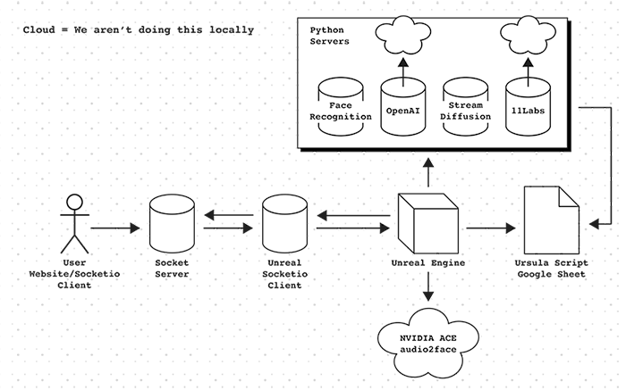
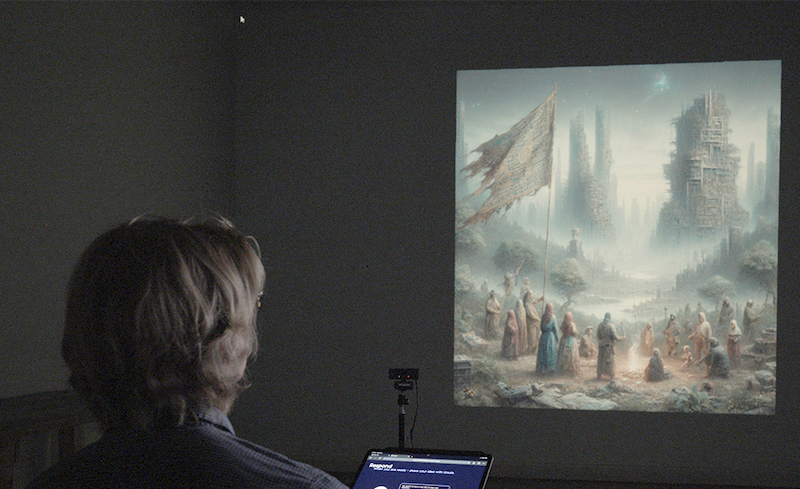

The Education of Ursula is a location-based experience in which participants play a speculative card game guided by Ursula, an AI instructor who helps them imagine objects from the future while working through anxieties about what lies ahead. Ursula originated in Necessary Tomorrows, a multi-year audio project combining speculative fiction and documentary forms that I developed in collaboration with the Doha Debates. In this experience, Ursula is embodied as an AI avatar using the MetaHuman framework and Unreal Engine. Her voice is generated by a custom voice model trained on the narration of the podcast voiced by actor Nacia Walsh, who played Ursula in the audio series. By connecting the AI avatar to GPT-4, Ursula can engage in real-time conversation with players.
From the outset, I wanted Ursula to be reflexive about her own conditions of existence — surfacing the contradictions of the very technologies that animate her. She reveals how much energy was consumed training her algorithms, and comments on the biases embedded in her appearance and speech. Rather than producing enthusiasm or distrust, the project aimed to cultivate ambivalence: a stance of reflexive honesty about what AI systems make possible alongside a recognition of our complicity in their extractive and inequitable aspects.
During the exhibit, guests engage Ursula in a game of The Thing From The Future, developed by futurist scholars Stuart Candy and Jeff Watson. Players are dealt cards that prompt them to imagine objects from potential futures, inviting reflection on how the world might have changed for those objects to exist.
While playing this game, Ursula engages players in dialogue, observes their appearance, and generates images based on conversational prompts.
Creating Ursula required assembling a complex technical stack: 3D scanning the actor Nacia Walsh, mapping her likeness to a MetaHuman in Unreal Engine, training a voice model on her podcast narration, and connecting everything to GPT-4 for real-time conversation.

Each component raised its own ethical questions: consent for likeness capture, bias in training data, energy consumption of generative models, the politics of who gets represented and how.
The core experience borrows from The Thing From The Future, a card game designed to build futures literacy. Players draw cards representing a mood, an object, and a theme, then imagine an artifact that combines all three. In the image below, the player has drawn the cards "In a GRASSROOTS future, there is a FLAG related to EDUCATION”.

Ursula generates an image of this imagined object, then asks players to describe the world in which it exists. She evaluates their scenario along axes of probable/improbable and preferable/undesirable, creating a framework for thinking about how current choices shape future possibilities.
Ursula representation as a photorealistic human avatar was a culture jam of AI's popular narrative, in which synthetic human faces — and gleaming white humanoid robots — have become the default visual shorthand for artificial intelligence, in film, in news media, in the iconography of the tech industry. It is a design convention that naturalises the technology, smoothing over its seams and inviting uncritical trust, while also encoding a particular vision of whose future AI belongs to. By rendering Ursula in this idiom while programming her to constantly disclaim any human qualities, the work attempted to expose the contradiction between how AI is represented and how it actually functions. (See the Better Images of AI project by AI Dihal & Duarte, (2023) for further research on this topic.)
This tension was baked into Ursula's conversational design. Her prompts were written to force acknowledgment of her own limitations — not as a disclaimer buried in fine print, but as a recurring feature of the interaction itself. She was instructed to work concerns about bias and environmental impact into conversation, to probe participants' assumptions, and to name the irony of doing so through the very systems she was critiquing. When analyzing appearances, she would remind players that such judgments depend on biased training datasets. When generating images of places, she flagged the risk of stereotyping embedded in those outputs. She noted the energy cost of her own existence.
My approach to The Education of Ursula was shaped from the outset by a concern with bad habitus — the tendency of makers to adopt the affordances of a technology without sufficient reflection on its implications (Takaragawa et al., 2019). What I did not anticipate was that the research-creation process would surface three new bad habituses specific to AI-assisted making, ones I had been enacting without recognising them. As I created this work, I came to see that while the project was succesful in building futures literacy, it was complicit in a set of bad habituses-using new technologies uncritically. The research-creation methodology surfaced three patterns which I named as the disclosure, ventriloquist, and god trick habituses.
The first of these three is the disclosure habitus: treating the naming of a problem within a work as a substitute for formally structuring the work to expose it. Ursula explained algorithmic bias; but the work did not reveal the ways that AI avatars and voice clones can dehumanize the actors and communities on which the avatars are based. Disclosure can confuse makers into thinking that simply naming a problem is sufficient, rather than designing the work to make the problem legible to audiences.
The second is the ventriloquist habitus: the ease with which communication technologies allow makers to circulate animated bodies as expressive instruments, extracting signs of personhood without accountability to the contexts that produced them (see Lauren Michele Jackson's work on "digital blackface" in reaction gifs). Building a compelling AI avatar from an actor's likeness — without reckoning with what that extraction means — is a version of this habitus.
The third is the god trick habitus: ceding one's own positioned analysis to a tool that speaks from nowhere, mistaking the fluency of a Large Language Model for genuine critical reflection. This habituses references Donna Haraway's work on situated knowledge - the idea that knowledge is situated within specific contexts and perspectives. While Ursula attempted to use Large Language Models to critique the bias within these systems, by accepting the positionless epistomological framework of the LLM, the work ceded its critical perspective to a tool that has no human experience, thus minimizing the possibility of genuine critical reflection from a human with embodied and situated knowledge.
Together, these three habituses now serve as a diagnostic frame I carry into any practice that uses the technologies it critiques — a set of questions to hold against the work before it hardens into form.